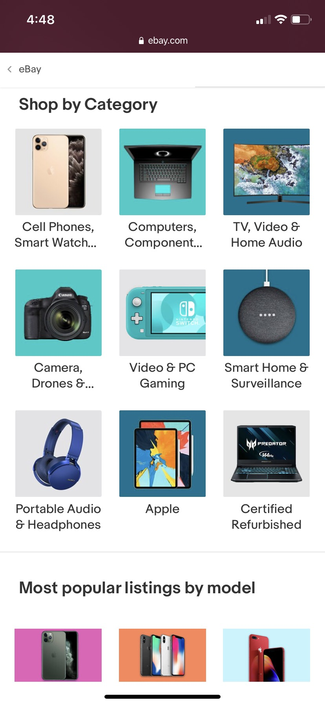
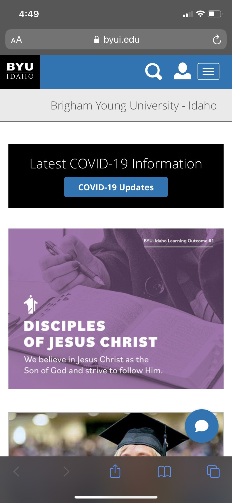

Proximity
Ebay
In this example, ebay does a good job at employing the principle of proximity. The spacing between the top set of items helps to show that they are all related. The spacing between the 'Shop by Category' section and the 'Most popular listings by model' section helps the user identify that they are, in fact, two distinct sections.
Fitt's Law
BYU-I
The school website is a great illustration of Fitt's law. The buttons at the top right corner of the screen are big enough to allow the user to select each one easily without too much effort.
White Space
AlgoExpert
AlgoExpert's website has a really clean design. On their mobile site they actually removed some illustrations to preserve whitespace. Everything just looks clean and feels fluid.